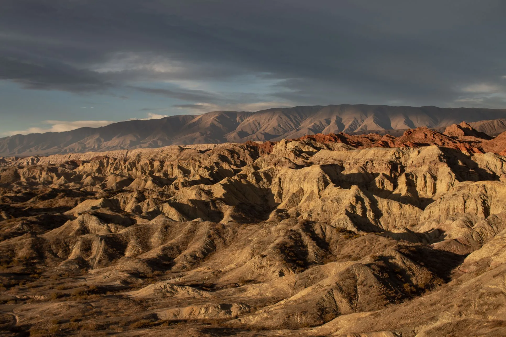
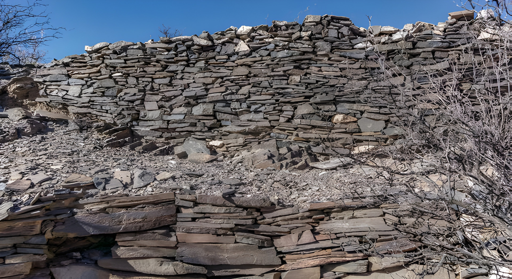

Galería · Destino Santa María
Santa María en imágenes
Un recorrido visual por los paisajes, la historia y la identidad del Valle de Yokavil.

Una colección para explorar
Postales del valle
Recorré las imágenes por tema o abrí una foto para verla en detalle. Cada fotografía forma parte de las historias y experiencias que presenta el sitio.
No hay fotografías disponibles para esta categoría.
Una pausa en el recorrido
Un paisaje para mirar sin apuro
Las imágenes abren una puerta para imaginar el viaje: detenerse en los detalles, recorrer con curiosidad y descubrir Santa María desde distintas perspectivas.
Volver a la colección